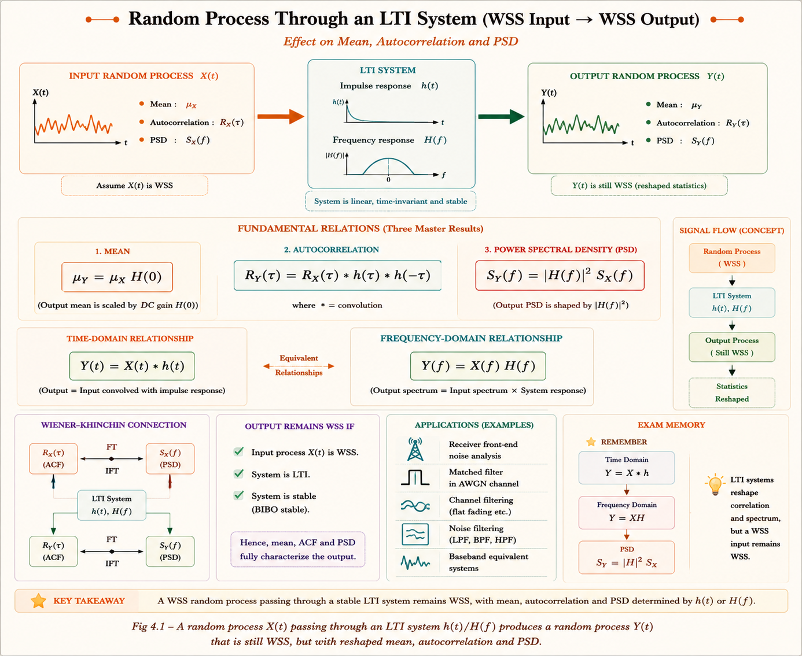
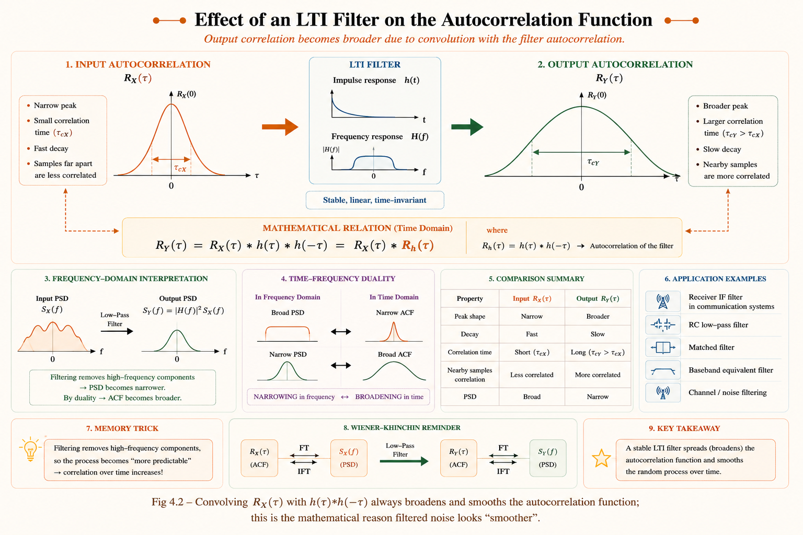
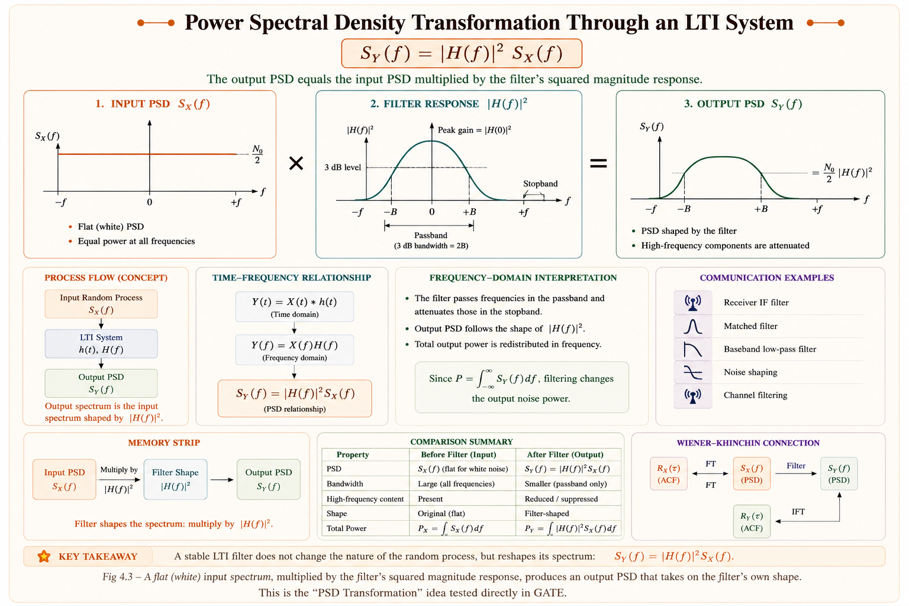
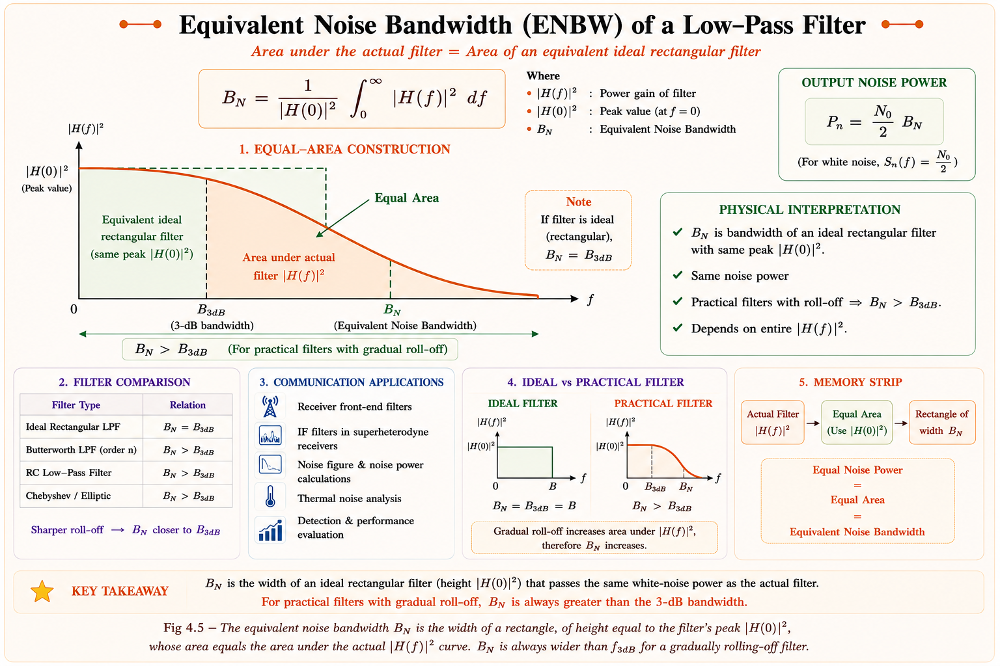
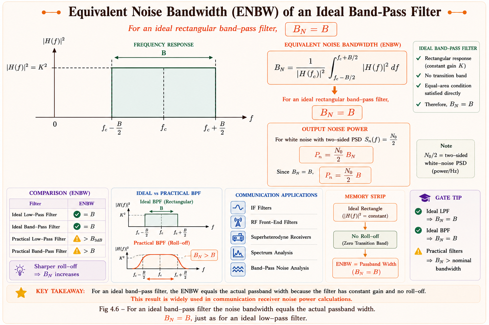
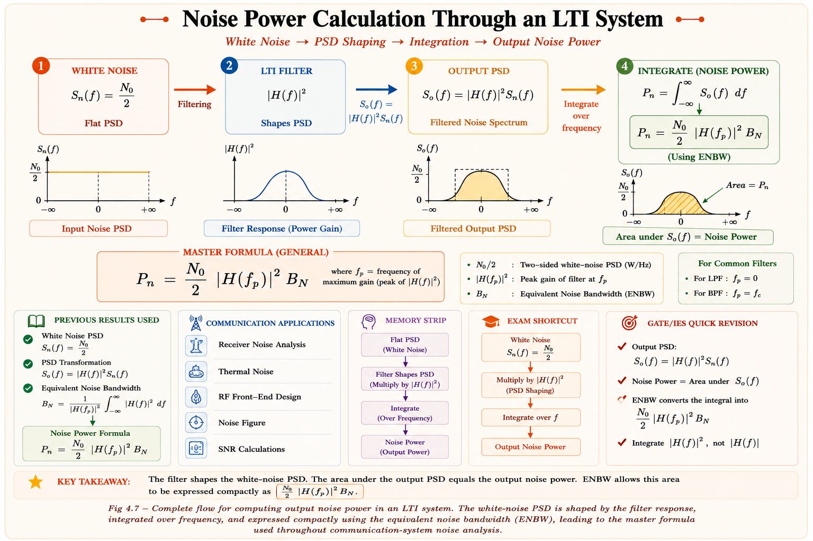

Random Signals Through LTI Systems
Noise filtering, output autocorrelation, output power spectral density and equivalent noise bandwidth — the complete framework for predicting how any linear time-invariant system reshapes a random process. Full derivations, GATE EC & IES ETE focus areas, and solved numericals.
Why Random Signals Through LTI Systems Matter
No real signal travels alone. A voice signal riding on a microphone wire picks up thermal noise from the amplifier's input resistor; a satellite downlink carries cosmic background noise; a power-line communication modem rides on switching noise from nearby loads. Every one of these signals, together with its accompanying noise, must pass through filters, amplifiers and transmission media — and every one of these blocks is, to a very good approximation, a linear time-invariant (LTI) system.
This chapter answers one central engineering question: if a random process \( X(t) \) goes into an LTI system, what comes out? We need to know how the mean, the autocorrelation function and the power spectral density of the input are reshaped by the system, because the answer directly decides the noise power reaching a receiver's detector, the resolution of a biomedical amplifier, or the interference floor of a smart-grid communication channel.
Every receiver front end — the low-noise amplifier, the IF band-pass filter, the baseband low-pass filter — is an LTI block. Thermal noise generated anywhere in the channel passes through every one of these stages before it reaches the decision device. The output noise power that results sets the signal-to-noise ratio and, ultimately, the bit-error-rate performance of the entire system.

Where This Appears Across Electrical Engineering
- ▸IF filters and baseband LPFs reshape thermal noise before the detector — output SNR depends directly on the filter's equivalent noise bandwidth.
- ▸PLC coupling filters on LV/MV lines must be analysed for how they reshape impulsive and Gaussian noise riding on the power line.
- ▸Matched filters and IF stages set the residual clutter and noise correlation seen by the threshold detector — directly fixing detection probability.
- ▸ECG/EEG amplifiers and notch/band-pass filters reshape physiological noise; equivalent noise bandwidth sets the achievable resolution.
- ▸Anti-aliasing filters ahead of an ADC decide how much out-of-band noise power folds back into the sampled signal.
- ▸EMI filters at an inverter's output reshape the switching-noise spectrum that ultimately reaches the motor windings and nearby sensors.
This topic sits at the intersection of three subjects you already know: Probability & Random Processes gives the statistical tools (stationarity, autocorrelation, PSD via the Wiener–Khinchin theorem); Communications gives the system tools (convolution, Fourier transform, frequency response); and Communication Systems gives the application (noise figure, SNR, matched filtering). This chapter is the bridge that connects all three.
Quick Recap — Random Process, Autocorrelation & PSD
Before going further, a 90-second recap of the three ideas from the previous chapter that everything here depends on.
- ▸Mean is constant: \(E[X(t)] = \mu_X\) for all \(t\)
- ▸Autocorrelation depends only on the time difference \(\tau\), not on absolute time \(t\)
- ▸\(R_X(t_1,t_2) = R_X(t_2-t_1) = R_X(\tau)\)
- ▸Flat PSD at every frequency: \(S_X(f) = N_0/2\)
- ▸Autocorrelation is an impulse: \(R_X(\tau) = \frac{N_0}{2} \delta(\tau)\)
- ▸Samples at any \(\tau \neq 0\) are completely uncorrelated
The PSD and the autocorrelation function are a Fourier-transform pair. Setting τ = 0 in the inverse relation gives the average power of the process:
Every result derived in this chapter is simply the Wiener–Khinchin theorem applied to the input–output relationship of an LTI system. If the previous chapter felt shaky, this is the prerequisite concept blocking everything that follows — revisit it before continuing.
LTI System Response — Output Mean & Stationarity
Let \( X(t) \) be a WSS random process applied to an LTI system with impulse response h(t) and frequency response H(f). The output is the familiar convolution integral, except now \( X(t) \) is random rather than deterministic:
Output Mean
Taking the expectation of both sides and using linearity of \( E[\cdot] \) (expectation passes through the integral because integration and averaging are both linear operations):
Here \(H(0) = \int h(\alpha)\,d\alpha\) is simply the system's DC gain. This result is intuitive: the mean of a process is its "DC component," and only the DC gain of the system can act on a DC quantity — every other part of H(f) operates on the fluctuating part of \( X(t) \), which has zero mean by definition.
A fundamental theorem: if \( X(t) \) is WSS, the output \( Y(t) \) of any LTI system is also WSS. Physically, an LTI system has no built-in notion of absolute time — its behaviour at time t is identical to its behaviour at time t + T for any shift T. Convolving a time-invariant operation with a time-invariant statistic cannot introduce time-dependence, so the output mean stays constant and the output autocorrelation depends only on τ.
Q: What happens if the system is linear but time-varying (not LTI)?
A: The output mean and autocorrelation can then depend on absolute time
t, and the output need not remain WSS even though the input was WSS. This is exactly why the
clean results of this chapter — \(\mu_Y = \mu_X H(0)\), \(R_Y(\tau) = R_X(\tau)*h(\tau)*h(-\tau)\), \(S_Y(f) = |H(f)|^2 S_X(f)\) — apply only to LTI systems.
Output Autocorrelation Function — Full Derivation
The output autocorrelation \(R_Y(\tau) = E[Y(t) Y(t+\tau)]\) is found by substituting the convolution integral for \( Y(t) \) at two different time instants and pushing the expectation inside both integrals.
Since \( X(t) \) is WSS, the expectation term depends only on the time difference, giving \(R_X(\tau + \alpha - \beta)\). The resulting double integral is, by definition, a double convolution:
The term \(h(\tau)*h(-\tau)\) is the deterministic autocorrelation of the impulse response itself — it measures how similar h(t) is to a shifted, time-reversed copy of itself, and depends only on the system, not on the input process.

Two related cross-correlation results, derived the same way, will be needed in Section 4.6:
Students very often write \(R_Y(\tau) = R_X(\tau) * h(\tau) * h(\tau)\), dropping the minus sign. Correlation is not the same operation as convolution — finding how \( Y(t) \) relates to Y(t+τ) requires looking at h "forwards" once and "backwards" once. Missing this time reversal is the single most common derivation error in this topic and a frequent GATE distractor.
Output Power Spectral Density — The Master Formula
This single relationship is the most frequently tested result in this entire chapter. Almost every numerical on noise through a filter ultimately reduces to one application of this formula.
Taking the Fourier transform of \(R_Y(\tau) = R_X(\tau) * h(\tau) * h(-\tau)\) and using the convolution–multiplication duality of the Fourier transform converts the triple convolution into a triple product:
Notice that the magnitude is squared, not H(f) alone. This is not a notational choice — it is a physical necessity. A power spectral density is a real, non-negative quantity (it represents power per unit frequency), while H(f) is in general complex. Only \(|H(f)|^2\) guarantees that \(S_Y(f)\) stays real and non-negative for every frequency, as a physical power density must.

Output PSD for Common Filter Types
| Filter Type | H(f) | Shape of \( S_Y(f) \) (input = white noise) |
|---|---|---|
| Ideal LPF, gain K, BW B | K for |f| < B, else 0 | Flat plateau of height \( K^2(N_0/2) \) for \( |f| < B \), zero outside |
| Ideal HPF, gain K | K for \( |f| > B \), else 0 | Flat plateau outside \( \pm B \), zero inside |
| Ideal BPF, gain K, centre fc, BW B | K for \( f_c - B/2 < |f| < f_c + B/2 \) | Two flat plateaus around \( \pm f_c \) |
| Single-pole RC LPF | \( 1/(1+j2\pi fRC) \) | Smooth bell, rolling off gradually — no sharp edge |
The output PSD is \(S_Y(f) = |H(f)|^2 S_X(f)\) — real-valued and always non-negative. The cross-PSD \(S_{XY}(f) = S_X(f)H(f)\) is, in general, complex and is a different quantity entirely (covered next, in Section 4.6). Applying the cross-PSD formula where the output PSD is asked for is a frequent scoring mistake.
Cross-Correlation & Cross-PSD Between Input and Output
Besides the output's own statistics, it is often useful to know how the output relates to the input — for example, in system identification or in the design of optimum (Wiener) filters. These are described by the cross-correlation functions \(R_{XY}(\tau)\) and \(R_{YX}(\tau)\), derived the same way as in Section 4.4 but keeping one signal undisturbed.
- ▸\(R_{XY}(\tau) = E[X(t) Y(t+\tau)] = R_X(\tau) * h(\tau)\)
- ▸\(R_{YX}(\tau) = E[Y(t) X(t+\tau)] = R_X(\tau) * h(-\tau)\)
- ▸Relationship: \(R_{XY}(\tau) = R_{YX}(-\tau)\)
- ▸\(S_{XY}(f) = S_X(f)\,H(f)\)
- ▸\(S_{YX}(f) = S_X(f)\,H^*(f)\)
- ▸They are complex conjugates: \(S_{YX}(f) = S_{XY}^{*}(f)\)
As a consistency check, multiplying \(S_{XY}(f) = S_X(f)H(f)\) by \(H^*(f)\) recovers the output PSD: \(H^*(f)\,S_{XY}(f) = S_X(f)|H(f)|^2 = S_Y(f)\) — exactly the master formula of Section 4.5. The cross-correlation results are not just a side note; they are the building block behind matched-filter theory and Wiener filtering, both of which appear later in the Communication Systems series.
Noise Filtering — White Noise Through LTI Systems
Ideal white noise is the standard idealised noise model used throughout communication theory. It is defined by a perfectly flat two-sided power spectral density at every frequency:

Applying the master formula of Section 4.5 with \(S_X(f) = N_0/2\) gives the output PSD and autocorrelation of "filtered" or coloured noise:
Passing white noise through a low-pass filter correlates nearby samples — a noise value at time t becomes statistically related to the noise value at t+τ for small τ, with that correlation extending over roughly the inverse of the filter's bandwidth. This is precisely why filtered noise looks visibly smoother on an oscilloscope than raw white noise, even though both have the same type of underlying randomness.
Q: Does filtering change the probability distribution of the noise?
A: If the input is Gaussian, the output stays Gaussian — a linear combination
(convolution) of Gaussian random variables is itself Gaussian. So "Gaussian white noise"
through any LTI filter becomes "Gaussian coloured noise": only the correlation/PSD shape
changes, never the distribution family.
Equivalent Noise Bandwidth — Low-Pass Filters
Real filters rarely have a clean rectangular \(|H(f)|^2\) — a single-pole RC filter, for instance, rolls off gradually with no sharp edge at all. This makes the integral \(\int|H(f)|^2 df\) awkward to reason about directly. Engineers solve this with a clever trick: replace the real filter, for noise purposes only, with an imaginary ideal rectangular filter that has the same peak gain and passes exactly the same total noise power.
where \(f_0\) is the frequency at which \(|H(f)|\) is maximum (\(f_0 = 0\) for a low-pass filter). \(B_N\) has units of Hz and is, by construction, the width of an ideal rectangular filter of height \(|H(f_0)|^2_{max}\) that has the same area — and hence passes the same white-noise power — as the real filter.

Worked Derivation — Single-Pole RC Low-Pass Filter
For an RC low-pass filter, \(H(f) = \dfrac{1}{1+j2\pi fRC}\), so \(|H(f)|^2 = \dfrac{1}{1+(2\pi fRC)^2}\) and \(|H(0)|^2_{max} = 1\).
Equivalent noise bandwidth is not the same as the 3-dB bandwidth. They coincide only for an ideal rectangular filter. For a single-pole RC filter, \( B_N \) is about 57% larger than \( f_{3\text{dB}} \), because the gentle roll-off lets meaningful noise power leak through well beyond the 3-dB point — a very frequently tested GATE numerical.
Equivalent Noise Bandwidth — Band-Pass Filters & Narrowband Noise
The same definition of Section 4.8 applies unchanged to a band-pass system, except now \(f_0\) is the centre frequency \(f_c\) at which the response peaks, and the integral is taken over the positive passband only.

Band-pass noise of this kind is conveniently represented using its in-phase and quadrature components. If \(n(t)\) is a narrowband noise process centred at \(f_c\), it can be written as:
where the in-phase component \(n_c(t)\) and quadrature component \(n_s(t)\) are themselves low-pass random processes, each with the same average power as \(n(t)\) and a PSD obtained by shifting the positive-frequency content of \(S_n(f)\) down to baseband. This representation is the standard starting point for analysing noise at the output of any IF (intermediate-frequency) stage in a superheterodyne receiver.
Every superheterodyne receiver — AM, FM, or digital — has an IF band-pass filter ahead of the demodulator. The noise bandwidth of that IF filter, combined with the master noise-power formula from Section 4.10, directly determines the noise power presented to the demodulator and hence the achievable SNR.
Output Noise Power Computation
This section combines every earlier result into the one formula examiners use most often to test this chapter numerically.
The output noise power is simply the area under the output PSD curve, \(N_o = R_Y(0) = \int_{-\infty}^{\infty} S_Y(f)\,df\). For white noise input with two-sided PSD \(N_0/2\), substitute \(S_Y(f) = \frac{N_0}{2}|H(f)|^2\) and use the fact that \(|H(f)|^2\) is even (because \(h(t)\) is real) to fold the integral onto positive frequencies only:
Recognising the remaining integral as \(B_N \cdot |H(f_0)|^2_{max}\) from the definition in Section 4.8 gives the master formula:

- ▸\(B_N = B\) (actual bandwidth)
- ▸\(N_o = N_0\,K^2\,B\)
- ▸\(B_N = \frac{1}{4RC}\)
- ▸\(N_o = N_0\,|H(0)|^2 \cdot \frac{1}{4RC}\)
Output SNR is simply signal power at the output divided by \( N_o \). This single formula for N_o is exactly what link-budget calculations and receiver sensitivity specifications are built on — making it one of the most practically important results in the entire communication systems curriculum.
Solved Numericals
Using the result of Section 4.3:
Only the DC gain matters for the mean — the detailed shape of H(f) at other frequencies has no influence on \( \mu_Y \) whatsoever.
Given: \( N_0 = 2\times10^{-10} \text{ W/Hz} \), \( K = 1 \), \( B = 10^4 \text{ Hz} \). For an ideal rectangular filter, \( B_N = B \) and \( |H(f_0)|^2_{max} = K^2 = 1 \).
Given: \( R = 10^4 \Omega \), \( C = 10^{-8} \text{ F} \), so \( RC = 10^{-4} \text{ s} \).
(i) Equivalent noise bandwidth:
(ii) 3-dB bandwidth:
(iii) Ratio check:
This \( \pi/2 \) ratio is a textbook constant for any single-pole RC low-pass filter, independent of the actual values of \( R \) and \( C \) — a fact worth memorising directly.
Given: \( N_0 = 2\times10^{-12} \text{ W/Hz} \), \( |H(0)|^2 = 1 \), \( B_N = 2500 \text{ Hz} \) (from EX 4.3).
For an ideal rectangular band-pass filter, \( B_N = B \) and \( |H(f_c)|^2_{max} = K^2 = 4 \).
Raw white noise has \( R_N(\tau) = (N_0/2)\delta(\tau) \) — by definition, any two distinct time instants are uncorrelated, no matter how close. After passing through the LPF, however, \( R_Y(\tau) = (N_0/2)\,[h(\tau)*h(-\tau)] \), and this function has a finite width approximately equal to the reciprocal of the filter's bandwidth — roughly \( 1 \mu\text{s} \) for a \( 1 \text{ MHz} \) filter. Physically, the filter has "memory": its output at any instant depends on a smeared average of the input over the recent past (governed by \( h(t) \)), so output values separated by less than this memory time inevitably share some of the same input history and are therefore correlated.
The width of \( R_Y(\tau) \) — the "correlation time" of filtered noise — is of the order of \( \frac{1}{2B_N} \). This is exactly why samples taken at the Nyquist rate of a band-limited noise process are approximately uncorrelated, while closer samples are not.
GATE & IES Previous Year Concepts
These topics recur consistently across GATE EC (Communication Systems / Random Process section) and IES ETE:
- ▸Output PSD formula \( S_Y(f) = |H(f)|^2 S_X(f) \) — direct application and conceptual MCQs
- ▸Equivalent noise bandwidth of RC / single-pole filters
- ▸Output noise power computation given filter and \( N_0 \)
- ▸Output mean using DC gain \( H(0) \)
- ▸Output autocorrelation derivation \( R_Y(\tau) = R_X(\tau) * h(\tau) * h(-\tau) \)
- ▸Cross-correlation / cross-PSD between input and output
- ▸Stationarity preservation through LTI systems
- ▸Narrowband noise — in-phase/quadrature representation
A WSS random process \( X(t) \) with PSD \( S_X(f) \) is applied to a stable LTI system with frequency response \( H(f) \). The PSD of the output process \( Y(t) \) is given by:
- (A) \( S_X(f) \cdot H(f) \)
- (B) \( S_X(f) \cdot |H(f)|^2 \)
- (C) \( S_X(f) \cdot H^2(f) \)
- (D) \( S_X(f) \cdot H^*(f) \)
Explanation: The output PSD must be real and non-negative since it represents physical power per unit frequency. Only \( |H(f)|^2 = H(f)H^*(f) \) guarantees this for a complex \( H(f) \); option (C) would give a complex value in general, and options (A) and (D) are the (complex) cross-PSD expressions, not the output PSD.
For a single-pole RC low-pass filter, the ratio of its equivalent noise bandwidth \( B_N \) to its 3-dB bandwidth \( f_{3\text{dB}} \) is:
- (A) 1
- (B) \( \pi/2 \)
- (C) 2
- (D) \( \pi \)
Explanation: Direct result of the derivation in Section 4.8: \( B_N = \frac{1}{4RC} \) while \( f_{3\text{dB}} = \frac{1}{2\pi RC} \), giving \( \frac{B_N}{f_{3\text{dB}}} = \frac{\pi}{2} \approx 1.571 \). This constant ratio is independent of the specific \( R \) and \( C \) values.
A WSS random process \( X(t) \) is applied to a stable LTI system. Which of the following statements is/are correct?
1. The output \( Y(t) \) is also WSS | 2. The output mean equals \( \mu_X \) multiplied by the system's DC gain | 3. If \( X(t) \) is Gaussian, \( Y(t) \) need not be Gaussian
- (A) 1 and 3 only
- (B) 1 and 2 only
- (C) 2 and 3 only
- (D) 1, 2 and 3
Explanation: Statements 1 and 2 are standard results from Section 4.3. Statement 3 is false — \( Y(t) \) is a linear (convolution) combination of Gaussian random variables and therefore must also be Gaussian, so statement 3 is incorrect.
White noise with two-sided PSD \( N_0/2 \) is passed through an ideal LPF of unity gain and bandwidth \( B \). The output noise power is:
- (A) \( N_0/2 \cdot B \)
- (B) \( N_0 B \)
- (C) \( N_0/4 \cdot B \)
- (D) \( 2N_0 B \)
Explanation: \( N_o = N_0|H(f_0)|^2 B_N \). For an ideal unity-gain LPF, \( |H(0)|^2 = 1 \) and \( B_N = B \), giving \( N_o = N_0 B \) directly — the factor of 2 from the two-sided PSD has already been absorbed by folding the integral onto positive frequencies, a step students often forget and mistakenly leave the answer as \( N_0 B/2 \).
Quick Revision — Memory Tricks
Whenever a PSD (a power quantity) crosses a filter, the filter's response always appears squared: \(S_Y(f) = |H(f)|^2 S_X(f)\). Contrast this with a plain signal passing through the same filter, where H(f) appears only once, unsquared: Y(f) = H(f)X(f). Power relationships square the filter; signal (amplitude) relationships don't.
Peak gain squared, Across the band \( B_N \), Scale by N₀, gives the output noise power: \(N_o = N_0 \times |H(f_0)|^2_{max} \times B_N\) — all three quantities multiply together, in this order, every single time.
Have a question on output PSD, equivalent noise bandwidth, or noise power computation? Type below or pick a suggestion.
Chapter Summary
\(\mu_Y = \mu_X \cdot H(0)\) — only the DC gain scales the mean. Any LTI system preserves WSS: if \(X(t)\) is WSS, \(Y(t)\) is WSS too.
\(R_Y(\tau) = R_X(\tau) * h(\tau) * h(-\tau)\). Filtering always broadens and smooths the autocorrelation function — never sharpens it.
\(S_Y(f) = |H(f)|^2 S_X(f)\). Magnitude must be squared so the output PSD stays real and non-negative — the single most tested result in this chapter.
White noise \(S_X(f) = N_0/2\) becomes coloured noise \(S_Y(f) = (N_0/2)|H(f)|^2\) after filtering; the impulsive \(R_N(\tau)\) becomes a finite-width function — samples become correlated.
\(B_N = \frac{\int_0^\infty |H(f)|^2 \,df}{|H(f_0)|^2_{\max}}\). For RC LPF: \(B_N = \frac{1}{4RC} = \frac{\pi}{2}f_{\text{3dB}} \approx 1.571 f_{\text{3dB}}\). For ideal rectangular filters, \(B_N = \text{actual bandwidth}\).
\(N_o = N_0 \cdot |H(f_0)|^2_{\max} \cdot B_N\). This single formula is the basis of every SNR and receiver-sensitivity calculation built on this chapter.
All technical content is derived from the following standard textbooks and learning resources. All explanations, derivations, diagrams and examples are original to Aarova AI.
- [1]Haykin, Simon. Communication Systems, 4th/5th ed. John Wiley & Sons. Chapter on Random Processes — random signals through linear systems, noise equivalent bandwidth.
- [2]Lathi, B.P. and Ding, Zhi. Modern Digital and Analog Communication Systems, 4th ed. Oxford University Press. Chapters on random processes and noise — autocorrelation and PSD of filtered noise.
- [3]Peebles, Peyton Z. Probability, Random Variables and Random Signal Principles, 4th ed. McGraw-Hill. Chapter on random processes and linear systems.
- [4]Papoulis, Athanasios and Pillai, S. Unnikrishna. Probability, Random Variables and Stochastic Processes, 4th ed. McGraw-Hill. Systems with stochastic inputs — autocorrelation and spectral analysis.
- [5]Proakis, John G. and Salehi, Masoud. Communication Systems Engineering, 2nd ed. Prentice Hall. Noise analysis in linear systems and narrowband noise representation.
- [6]IIT Madras / IIT Kharagpur NPTEL. Probability and Random Processes / Communication Engineering lecture series. National Programme on Technology Enhanced Learning. nptel.ac.in. Used for concept verification only.